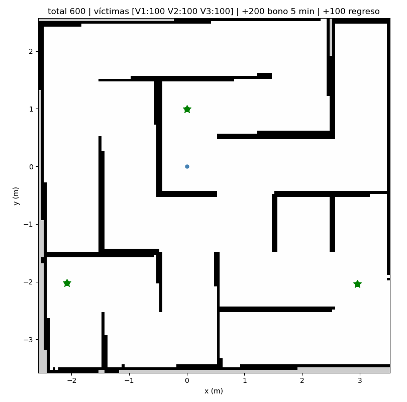

total 600 | víctimas [V1:100 V2:100 V3:100] · fin: done ·
0.3 s · CI en verde

| Víctima | Puntos | Distancia (m) | Reporte # |
|---|---|---|---|
| V1 | 100 | 0.00 | 1 |
| V2 | 100 | 0.00 | 2 |
| V3 | 100 | 0.00 | 3 |
PR #7 ·
corrida del CI y artefactos
(los artefactos duran 14 días) · commit 08e4d1f